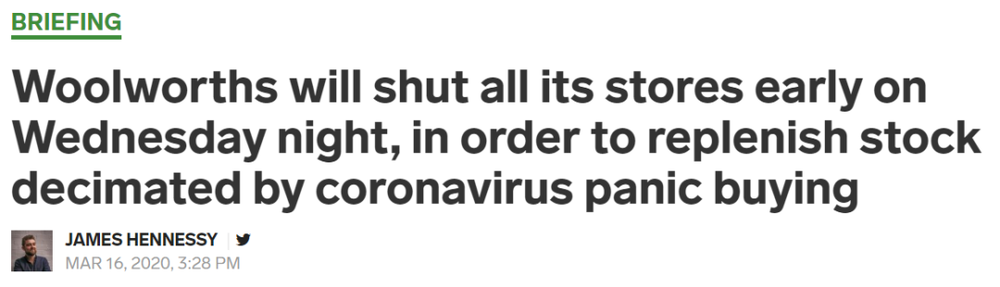
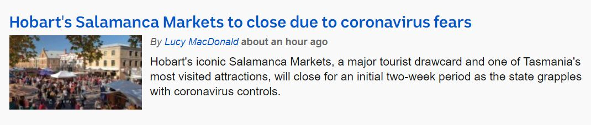
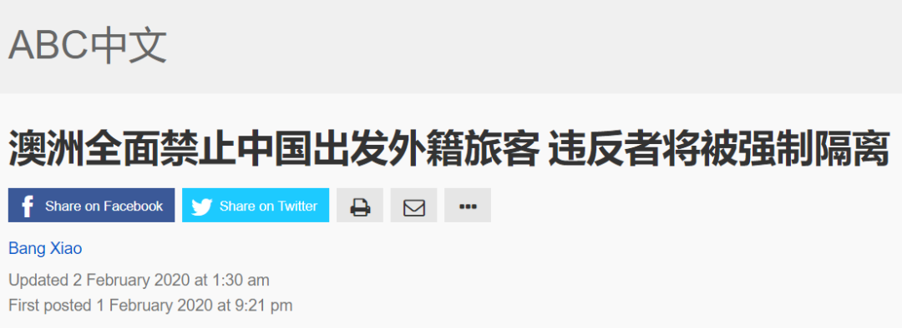
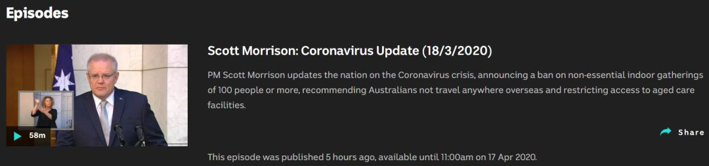
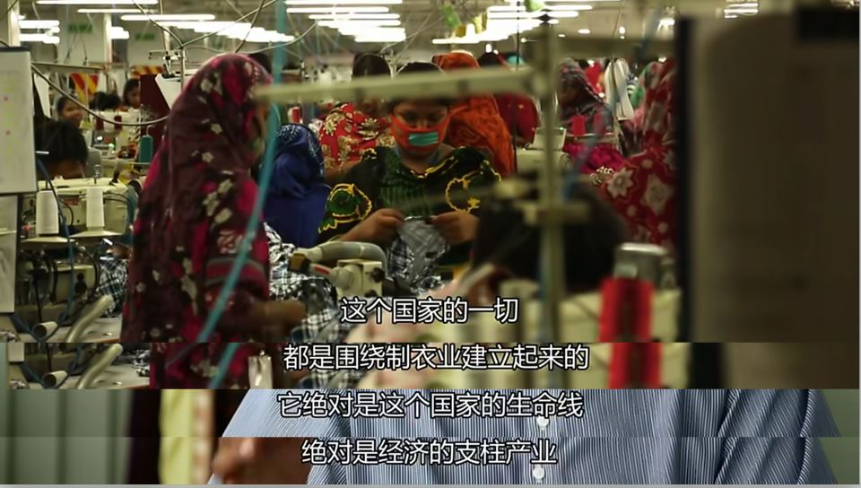

口述实录 | 离我们这个团解散、团长“解甲归田”的日子，快了
原文链接 备份链接 也是突然发现，我们的门楣窗帷、院墙楼道，我们的一饭一菜，居然与我们的国家有如此密切的联系。 文 | 刘惠玲 我家住汉口宝丰路交通小区，从2月中旬小区封闭管理至今，我当志愿者菜篮子分发团“团长”也快满月了。 武汉封城后 …
©送给自己21岁的第二个生日礼物，关于20岁的反思（顺带狂批营销号和一部分华人及留学生）
20岁最让我后悔的，莫过于选择尝试了过度社交。
这其实是我曾经的一个盲区。我自幼至20岁都不懂社会社交真实的境况到底如何。
在读完《战争与和平》后，书中有一名女性（原谅我读完该书两年后已经难以记得其名姓，读者朋友可以自行查证）可以控制一整个社交场，让俄国高官们时常可以对接他们的资源。
我在当时突然意识到这是一种重要的能力，这种核心人物存在的价值之一就是让其他人结识以提高社会效率。（后来才搞明白过来，当时所没有的社交媒体，今天却已经充斥了我们的世界，面对面社交已经演化为一种人性刚需）
但当我开始实践的时候，我却获得了不成正比的回报。
半年时间我做到了让一个校区的中国学生几乎都知道了我的存在，并且同时在几个社交圈里徜徉。
我出于本能一样地观察着社会活动中的每一个人与其过程，最后的结论是，它浪费时间与精力，并对我的过去的社交网络产生了巨大打击。
而曾经沉淀下来的社交关系，才更经得起时间的磨砺。
一个花花绿绿的西方世界，把一群人搞得误以为吃喝玩乐、风花雪月叫做自由。
我享受着社交带来的一种特别的福利，它让我快速了解了墨尔本的娱乐世界，却也使我被障眼法一样地误将留学生的世界视之墨尔本的世界，半年时间，我对当地其实是一无所知。
初次当留学生大概都会有这样的经历吧。
但更让我难过的发生在2020年的2月，我发现我根本无法在墨尔本当地组建一个小小的留学生志愿者团队；而在北美和欧洲的同学们，却迅速发展起了一整套的志愿者组织，他们快速地向内地进行了价值上千万美元的援助。
是我之于澳洲还太过于生疏吗？
是我了解地太少以至于做的不够好吗？
可是我在联系了很多人和学校团体后，也并没有遇到或听说澳洲存在高效组织化的华人志愿者团队，有些个人是独自为战，教会们则是趁机布道多于支援前线。
或许，我善意地猜想，是澳洲的一些华人志愿者团队太低调而没有做任何宣传所造成的吧。
我遇到的留学生们大致可以分为两类。
一类是生活至上，一类是理想至上。
当我在1月感到巨大的紧张时，同学们大多并不了解国内情况，并且我在1.20发出警告的时候，因为我的预警信息早于国内，所以在澳洲被同学们视为是谣言，直接引发了群内的“撕逼”。在湖北的同学们则全部站到了我的一方，最后大家心寒了，一个几百人的同学群，没人再提醒过其他人需要注意什么。
那次短暂的冲突中，不少平时看似社交关系不错的同学，直接变成了对我的冷嘲热讽。是的，他们大多也喜欢冷嘲热讽任何人，那是他们这类人令人厌恶的表达方式。
当我在1月底呼吁专业同学们（我个人组建的我校专业社群之一）不要返回内地，而返回澳洲者应主动隔离14天时，被视为是在引发恐慌——随后澳洲发布数条禁令，几乎与我发布的内容一致。

我在专业大群所发公告，时间为2020.1.25
2月12日，我撰写了散文诗《北林散文诗集-预警全球灾疫处于爆发前夕》，暗示真正的灾难即将来临；彼时留学生群体大多完全不关心安全保障问题，而当时其实是安全空档期中最危险的时间段，海外感染正在大流行，而西方政府防疫机制仍未大规模启动。
再后来，当我表示支持澳洲政府的政策时，中转第三国的很多留学生们的反应直接从反对变为谩骂——他们并不在意比起来之前武汉逃出来的30万人，他们对于第三国和澳洲都更加危险——现在从全世界逃回中国的人，很多也是在给中国添麻烦。
好好在海外待着，保护好自己，别那么相信中文世界里的谣言，也不要对西方政府真的失望。
而中国学生们比起信澳洲政府，却还真的更加相信营销号；他们是真的被营销号完美洗脑，以为西方政府多是傻瓜，而不是一整套发展了近四千年才演化出的高度默契的泛全球行政组织。
2020年3月18日，天天刷中国营销号的内地留学生和当地华人们创造了令澳洲多位领导人都表示失望的抢购狂潮，他们抢到了什么程度？抢到了今天澳洲woolworth（世界连锁超市巨头）将在澳大利亚全国范围内通宵闭店上货；

他们甚至搞关了一家市场；

他们搞到员工说两个月后才可能恢复正常；
我在QV coles超市的暗访
他们抢到大量物资被规定只能一人一份；
拍摄于south yarra woolworths
他们抢到纸质类物资、防护类物资社会供应近乎中断；乃至于抢到澳洲物价飙升。
于QV医药店的暗访
我不理解这群人，都生活在澳洲了，为什么看内地营销号看地比看ABC（澳洲最大媒体机构之一）还深信不疑，难道英语世界还不如中文世界了解一个说英语的国家的基本政策吗？
按营销号们说的，西方文明都要玩完（学社科的几十位读者，我强调一下，这和最近社科圈讨论的西方文明因疫情将变革和发展完全是两回事），大家赶紧转移资产回内地吧，快离开这个将陷入地狱的异域国家。
实际上，澳洲的抗疫反应是极其迅速的，在中国刚刚启动封锁措施时澳洲即宣布拒绝内地直达澳洲的航线；

在感染人数不及一百位时即启动一系列的管制措施，并在感染人数不到300位时各个州均采取了警戒状态；

国家机构在综合考量物资、物流、经济问题后，在维持社会基本正常运转的情况下对大量公司和部分学校进行适当的封锁与隔离。

澳洲红领巾公众号整理
当地民众也普遍自觉，并没有大规模跟风抢购，从而避免了社会物资极度陷入短缺状态进而引发社会恐慌。
当地民众对自己本国基本社会规则的自律性，也保证了澳洲实体经济仍可良好运转。
而且没有出现的抢购潮，也为医疗物资调配实现了优先让路，让医院有充足的物资，让各种病人能够最早获得优势治疗，从而保证了人命优先。
反观中国，将口罩买到举国皆无，全球皆无；医生们在更混蛋的红十字会的毫无作为中更是没有物资，几千医生就这样在极度恐慌的市场和失灵政策的双重打击下感染。
我们牺牲了太多是因为不这样做中国真的有可能无法阻止疫情的扩散，但澳洲如果也举国购买口罩，那么作为非口罩生产国的澳大利亚，还有多少资金去购买物资给医院这个最需要口罩的地方呢？
家家囤货几十上百个，作为全球主要口罩生产国的中国尚未恢复产能却已经明确表示要支援伊朗、意大利、西班牙，澳大利亚去哪里买医疗物资呢？
作为一个崇尚社交与出游的国度，澳洲民众已经开始尝试适应一种新的社会环境，澳洲政府也已经是连澳洲人禁止出国和禁止回国两条都提上了日程，这样严厉的措施连中国都未采取。我为这样的政府点赞，这其实是社会管理中前所未有的巨大而重要的先例。

中国的封锁是迫不得已的，但也由此给全球实体经济造成了难以承受的灾难；而美国略一采取封锁措施，就可能到底不知多少企业倒闭，多少人在封锁后连吃的都买不到的窘境，并且是直接波及全球的经济灾难。
试问哪个依赖实体经济的小国能够承受？
假如美国服装业因股市受灾加之全球门店因疫情与经济衰退大量关闭，孟加拉国这一依赖服装出口的国家有可能直接滑向一个一亿人口的人口大国走入经济衰退的灾难；觊觎孟加拉的印度按历史规律一定会刻意引发印孟边境的更多冲突。而与孟加拉血脉相承的巴基斯坦又从来未曾坐视不管… …


BBC Documentary Dying for a bargain
美国的每一个政策都必须考量其对当下及未来的世界造成的影响。他们有责任做出严苛的决策。而中国自媒体里的营销号们，只懂得吸引眼球与炒作。
可是我在澳洲，就看到了这样的一切。
没有了物资，老人们买不到口罩和必要的医用品，医院和高校附属医学机构物资陷入短缺，而留学生们大多都是年轻人，他们手里却拿着最多的物资，并且深度地恐慌，买买买，逃逃逃。
该恐慌时候不恐慌，不该恐慌的时候使劲作。
我费尽半年时间，却发现自己交际了一个这样的圈子。
我反思了很久为什么澳洲会出现这种情况，一群人中有不少不重视国家安危而重视个人的安危，他们被一群热衷吸引眼球的营销号牵着鼻子跑。而在北美、西欧等国也出现了这样的现象。
我想，是因为大家并没有乐意为自己所在的国家承担国家责任吧。
当大难临头的时候，人们优先选择的是自身安危，而不是自己所在国整体的安危。
至于建立海外志愿者团队的差异性，我想是在于澳洲的留学生年龄一方面普遍偏低，另一方面是在澳留学生们原在国内的水平相较于欧美更显参差不齐。欧美大龄留学生众多，在普遍给人的感受上，其社会经验与社会责任感要远高于澳洲留学生。
而这些澳洲留学生中也是强者更强弱者更弱，能力水平分散，更如一盘散沙。
结识的几位优秀的在澳留学生，往往都是直接参与到欧美或内地的志愿者团队，积极工作，以国家危难为己任。
而我必须要承认，自己曾经尝试打造的澳洲社交网络基本是浪费时间也没有用处的，一个漂浮在澳洲国家社交网络之外的留学生圈，基本如同孤岛一般，它可自给自足，也可令我沉迷其中忘记理想。
而我过度社交的第二个高峰出现在疫情发生后的这两个月里，一百多个社群的快速加入后，又退出了几十个社群。很快就发现各个志愿者团队基本已经形成了一个超大的圈子，热心于帮助他人的人们互相吸引，聚集到了一起。
这一段过度社交的经历是有利于他人和我个人的成长的。
我相信当疫情过去后，一起哭过一起笑过的人互相间还都记得对方，只是现实世界会再次慢慢将我们拖回到那个有些势利的社会人状态。
但我的这段努力成功帮助前线阻止过疫情，也帮助我学会了一整套的远程超大团队工作管理，逼我学习了一堆的产品经理课程。
一个新的世界由此向我敞开，包括一些新沉淀下来的社交关系，他们在疫情中冲在第一线，他们胸怀对这个社会的理想，或悲愤于现实或热爱于未来，他们是世界各地的优秀的人们。
我曾经对这个世界满是失望，现在看着他们，我激情满腔。
梦想里再次塑造西河流派，成为了更强烈的使命感。
这也是20岁留给我的最深刻的感受吧，这种使命感如若天命一般，令我矢志向前。
作者：北林
编辑：北林
信息来源：北林
DW深度 北林
长按二维码向我转账
受苹果公司新规定影响，微信 iOS 版的赞赏功能被关闭，可通过二维码转账支持公众号。
文章已于修改
原文链接 备份链接 也是突然发现，我们的门楣窗帷、院墙楼道，我们的一饭一菜，居然与我们的国家有如此密切的联系。 文 | 刘惠玲 我家住汉口宝丰路交通小区，从2月中旬小区封闭管理至今，我当志愿者菜篮子分发团“团长”也快满月了。 武汉封城后 …
原文链接 备份链接 早春的武汉春风拂面，这两天接到爸妈打来的电话，询问我的近况。我告诉他们我过得好着呢：吃着大餐、住着五星级的酒店。其实，我特别想念妈妈蒸的馒头，就算只就着大蒜，我也能吃两个碗大的馍馍。 口述 | 毛 平 整理 | 沈 …
原文链接 备份链接 作者：北林 编辑：北林 特别不感谢：给阻止疫情制造麻烦的混蛋们 我听来了许多虚假的、不符合主流的、刻意制造矛盾的流言蜚语; 发这里是告诉大家: 不要相信，不要转发， 都是假的，不要去调查， 尤其是记者们，以下都是假 …
原文链接 备份链接 前线医护人员的卫生巾和安心裤还够吗？ 2月6日，24岁的女孩梁钰在微博上发问：“前线医护人员的卫生巾和考拉裤还够吗？这么多的女性医护人员是如何解决她们的月经问题啊？现在防护服不够，想必也是一片卫生巾用一天，也很容易感 …
原文链接 备份链接 作者：北林 编辑：北林 特别感谢：传媒工作者们 1 我现在的主要工作是为支援中国各地抗疫人力、物力对接手里的各种资源，并积累资源以方便日后的对接。 每天一打开手机，微信的消息要更新近十分钟才能更新完，128G的手 …